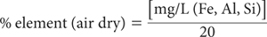
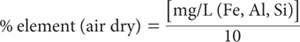
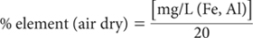
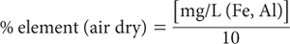

Iron, Al and Si are common elements in the earth’s crust and in soils. Among the most abundant non-clay minerals found in the clay fractions of soils are the oxides and hydroxyoxides of Fe (hematite, maghemite, goethite, lepidocrocite), Al hydroxides and oxy-hydroxides (gibbsite, boehmite), Si oxides (quartz, opaline silica), and some disordered forms of Si (Norrish and Pickering 1983). Ure and Berrow (1982) report typical total concentrations in soils of 0.01–21% Fe, 0.07–20.3% Al, and 50–70% SiO2.
Soil minerals dominated by these elements can be grouped into: (a) those that are easily weathered; (b) those that are moderately resistant to weathering, and (c) those that resist weathering (Ure and Berrow 1982). The first three chemical tests in this chapter help characterise different forms of Fe, Al and Si that affect soil properties. The extractants are acid ammonium oxalate (Tamm 1922; McKeague and Day 1966), sodium pyrophosphate (Blakemore et al. 1981; 1987), and citrate-dithionite (Holmgren 1967). For example, the ratio of oxalate-extractable Fe to dithionite-soluble Fe quantifies the proportions of the more and less active fractions, and has been shown to be a useful parameter for characterising soil properties such as P sorption (Schwertmann and Taylor 1989). Sequential extraction of soil involving all three methods in the order pyrophosphate/acid ammonium oxalate/dithionite can be used as a further aid to the type and distribution of Fe in the sample (Taylor 1987). Examples of the levels of Tamm’s Oxalate-extractable Fe, Al and Si in New Zealand reference soils are summarised in Table 13.1, derived from data published by Vortman (1980).
The fourth method for extractable Si (13D) is used to assess the likely responsiveness of crops such as sugar cane and rice to applications of silicated products such as Ca silicate, basalt rock dust, diatomaceous earth, and sugarmill muds (Haysom and Chapman 1975; Haysom and Kingston 1999; Berthelsen et al. 2001). The method is based on extraction with 0.005 M sulfuric acid, which is the same extractant used for soil P by Method 9G. The test is correlated with relative sugar cane yields as assessed by field experimentation in Queensland (Kingston 1999).
Table 13.2 has summary details on the methods included in this chapter for measuring Fe, Al and Si. Methods 13A1 to 13C1, inclusive, were similarly coded in Rayment and Higginson (1992). More details on all methods are provided in method preambles. No analytical performance data derived from soil interlaboratory proficiency programs of ASPAC are available for these tests.
Acid ammonium oxalate (acid oxalate) extracts Fe and Al from poorly crystalline minerals such as ferrihydrite, allophane and imogilite; minerals containing Fe2+ such as magnetite; and organic matter. Attack on poorly crystalline lepidocrocite has been reported by Childs and Wilson (1983).
Table 13.1. The range and median concentratŠn of Tamm Oxalate-extractable Fe, Al and Si at three depths (if present) for 11 New Zealand reference soÕs. Results are expressed on an oven-dry basis.
Tamm Oxalateextractable elements |
SoÕ depth (cm) |
ConcentratŠn (%) |
|||
Minimum |
Median |
Maximum |
|||
Fe |
0–20 |
0.03 |
0.39 |
1.89 |
|
≈50 |
0.11 |
0.3 |
1.67 |
||
≈100 |
ND† |
0.18 |
0.34 |
||
Al |
0–20 |
0.03 |
0.17 |
0.31 |
|
≈50 |
0.7 |
0.18 |
0.91 |
||
≈100 |
0.01 |
0.065 |
0.31 |
||
Si |
0–20 |
ND |
ND |
0.09 |
|
≈50 |
ND |
ND |
0.21 |
||
≈100 |
ND |
0.005 |
0.05 |
||
Table 13.2. Summary detaÕs of method codes, technologies, method titles, and notes on soÕ tests described in this chapter.
Code |
Technology |
Test method |
Notes |
13A1 |
Empirical extraction – with an ICPAES (preferred) or AAS or possibly a FES finish. |
Acid-oxalate-extractable (Tamm) Fe, Al and Si. |
Reasonable estimate of acid oxalateextractable Fe, Al and Si. |
13B1 |
Pyrophosphate-extractable Fe and Al. |
Reasonable estimate of pyrophosphate-extractable Fe and Al, provided very fine soil particles are removed from extracts prior to analysis. |
|
13C1 |
|
Citrate/dithionite-extractable Fe and Al. |
Reasonable estimate of secondary Fe oxides, including oxyhydroxides and the fractions extracted by pyrophosphate and acid oxalate. Expect background interference with FES. |
13D1 |
Empirical extraction with a blue silicomolybdous colorimetric finish. |
Acid-extractable soil Si – automated colour |
Expect similar analytical precision to soil P Method 9G. |
13D2 |
Empirical extraction – with an ICPAES finish. |
Acid-extractable soil Si – ICPAES |
Expect similar analytical precision to soil P Method 9G. |
There is a long-held view (Tamm 1932) that the reactivity of acid oxalate on crystalline oxides and crystalline clay minerals is very limited. There are, however, exceptions. For example, the extractant can remove crystalline Fe oxides if a source of Fe2+ is present, as occurs with siderite and maghemite (Schwertmann and Taylor 1989; Taylor 1987). This can result in overestimates of Fe associated with poorly crystalline soil minerals. The reagent will also dissolve some Al oxides present in soils. Relations between ‘Tamm’ Fe and Al have been demonstrated by Metson and Cox (1978).
The reagent has little effect on the clay minerals kaolinite, montmorillonite, vermiculite or illite but it does react with biotite and chlorite, which are both trioctahedral-layer silicates. It should only be used on calcareous soils if there is prior removal of CaCO3 (see Note 1). Loeppert and Inskeep (1996) report that extracts of acid ammonium oxalate will include water-soluble Fe, exchangeable Fe, and part of the organically-bound Fe. As an empirical chemical test, the method is influenced by reaction time, temperature, and the vigour of shaking.
To avoid possible changes due to photo-reduction of Fe-containing soil minerals, extraction with acid oxalate must occur in the dark (Schwertmann and Taylor 1989). The method, which employs an initial soil/extract ratio of 1:100, is similar to those described by Blakemore et al. (1981, 1987). Above 5% acid oxalate-extractable Fe or Al, the soil/extract ratio should be increased to 1:200, as demonstrated by Parfitt (1989).
Acid Oxalate Reagent
Dissolve separately 16.2 g ammonium oxalate [(COONH4)2.H2O] and 10.8 g oxalic acid [(COOH)2.2H2O] in deionised water, combine and make to 1.0 L. Check and adjust pH to 3.0±0.05 with either chemical. This reagent corresponds approximately to 0.114 M ammonium oxalate and 0.086 M oxalic acid, giving a total oxalate concentration of 0.2 M.
Caesium Chloride Stock Solution
1 L contains 20 g of caesium.
Dissolve 25.34 g caesium chloride (CsCl) in 1 L deionised water.
1+4 Caesium Chloride Diluent Solution
Dissolve 1.6 g CsCl in 400 mL of deionised water, add 25 mL 10 M HCl, and make to 1.0 L with deionised water.
Combined Fe, Al and Si Primary Standard
1 L contains 1000 mg of Fe, Al and Si, respectively.
Commercial standard solutions may be used; otherwise prepare as follows:
Aluminium. Dissolve 1.000 g pure aluminium wire in 20 mL hydrochloric acid (HCl; 10 M) with the addition of a trace of mercury salt (one small crystal of mercuric chloride; HgCl2) to catalyse the reaction.
Iron. Initially clean about 1.5 to 2.0 g pure iron wire in 10 M HCl, wash with deionised water and dry quickly. Weigh 1.000 g of the iron wire, after cutting into small pieces, and dissolve in 40 mL 5.0 M HCl, heating on a water bath if necessary.
Silicon. Finely grind pure silica sand (SiO2) and dry to constant weight at 450°C. Cool, and weigh 2.139 g into a platinum crucible. Add 12.0 g sodium carbonate (Na2CO3). Heat over a burner or in a muffle furnace until molten and continue heating at 1000°C for 30 min. Cool and dissolve the melt in about 200 mL deionised water. If the solution is not clear, discard, and grind the silica to a finer particle size before fusing with Na2CO3.
Combine firstly the Al and Fe solutions in a 1.0 L volumetric flask and add ≈500 mL deionised water. Add the Si solution, slowly with stirring, and make to volume with deionised water. Add a few drops of toluene (C6H5CH3) as preservative.
Combined Fe, Al and Si Working Standards
Dispense 0, 2.5, 5.0, 12.5, 25.0, 37.5 and 50.0 mL combined Fe, Al and Si Primary Standard into 500 mL volumetric flasks. To each add 25 mL CsCl Stock Solution, 100 mL Acid Oxalate Reagent, 10 mL 10 M HCl, and make to volume with deionised water. These solutions contain 0–100 mg/L of Fe, Al and Si. For a 1:100 soil/solution ratio and a 1+4 dilution of sample extracts only, soil concentrations are 0, 0.25, 0.5, 1.25, 2.5, 3.75 and 5.0% of Fe, Al and Si, respectively.
Shake 1.0 g air-dry soil (<0.5 mm) with 100 mL Acid Oxalate Reagent in 250 mL bottles in the dark on an end-over-end shaker for 4 h at 25°C. Following extraction, continue to avoid exposure to light for as long as the soil and Acid Oxalate Extractant remain in contact. Centrifuge to obtain ≈50 mL of extract, which should be clear when viewed using reflected light. Following separation of extract and soil, there is no short-term need to store extracts in the dark prior to instrumental analysis.
For expected soil concentrations of Fe in the range 0–5%, dilute sample extracts only 1+4 using the 1+4 CsCl diluent solution. If higher concentrations are expected, re-extract fresh soil using a soil/solution ratio of 1:200 prior to 1+4 dilution of sample extracts only with the 1+4 CsCl diluent solution.
Determine Al, Fe and Si in standards, blank and diluted extracts by ICPAES. Alternatively, determine Al and Fe in standards, blank and diluted extracts by AAS or by FES, the latter two using a lean nitrous oxide-acetylene flame, which should have a ‘red feather’ zone 1–2 cm high. For Si by AAS, a moderately rich nitrous oxide-acetylene flame is preferred.
Determine concentrations of individual elements in mg/L from separate calibration curves (or regression equations) and apply a blank correction. If any delay in instrumental analysis is expected, the clarified extracts should be kept cool and stored in the dark to prevent photo-induced decomposition of oxalate, as this may result in loss of Fe by precipitation (Borggaard 1988). See Note 2 re the concentration of oxalate.
For 1+4 dilution of extracts and a 1:100 soil/solution ratio:

For 1+4 dilution of extracts and a 1:200 soil/solution ratio:

Report as oxalate-extractable element (Fe, Al, Si) (%) on an oven-dry basis. Use the air-dry moisture to oven-dry moisture ratio to convert to an oven-dry concentration. Refer to Method 2A1 for guidance with regard to this soil moisture calculation.
1. Calcareous soils should be pretreated to remove any CaCO3, since oxalic acid will react with solid-phase CaCO3, thus affecting the pH of the oxalate/oxalic acid buffer. Also, oxalate precipitation as the insoluble Cs salt can be expected. The preferred pre-treatment involves use of ammonium acetate at pH 5.5 (Loeppert and Inskeep 1996).
2. Avoid high concentrations of oxalate during instrumental analysis (particularly by AAS) as oxalate can cause clogging of the burner head. To minimise this possibility, dilution (known volume) with deionised water to the extent possible is recommended by Loeppert and Inskeep (1996).
Values for pyrophosphate-extractable Fe are used in some soil classification systems to identify podzolised soils. The pyrophosphate reagent will remove Fe-organic complexes and Al-organic complexes (Taylor 1987) by acting as a dispersing agent. Organic matter containing Fe and Al is peptised along with Fe minerals of high surface area and appropriate surface chemistry, such as ferrihydrite (Parfitt and Childs 1988), but more importantly geothite (T.A. Beech, pers. comm.; McKeague et al. 1971).
When performing this analysis, especially on soils that contain large quantities of very fine, poorly crystalline materials, failure to obtain suitably clear extracts can cause analytical difficulties. Erroneously high values by flame spectrometry can be avoided by ‘clearing’ soil extracts before analysis using high speed centrifugation (20 000 rev/min), usually in conjunction with added ‘Superfloc’ (Ballantyne et al. 1980; Blakemore et al. 1987). When pyrophosphate-extractable C is required to confirm the presence of a spodic horizon in Soil Taxonomy (Method 6C1), however, ‘Superfloc 127’ should not be included prior to centrifugation.
0.1 M Sodium Pyrophosphate
Dissolve 44.61 g sodium pyrophosphate (Na4P2O7.10H2O) in deionised water and dilute to 1.0 L.
Superfloc Solution
Dissolve 2.0 g Superfloc 127 or similar (supplied by Cyanamid Australia Pty Ltd) in deionised water and dilute to 1 L.
Combined Fe and Al (and Si) Primary Standards
As for Method 13A1.
Combined Fe and Al (and Si) Working Standards
Dispense 0, 2.5, 5.0, 12.5, 25.0, 37.5 and 50.0 mL Combined Fe and Al Primary Standard into 500 mL volumetric flasks. To each add 100 mL 0.1 M Na4P2O7.10H2O and make to volume with deionised water. These solutions contain 0–100 mg/L of Fe, Al (and Si). For a 1:100 soil/solution ratio and a 1+4 dilution of sample extracts only, soil concentrations are 0, 0.25, 0.5, 1.25, 2.5, 3.75 and 5.0% Fe and Al (and Si), respectively.
Shake 1.0 g of air-dry soil (<0.5 mm) with 100 mL 0.1 M Na Pyrophosphate solution in 250 mL bottles on an end-over-end shaker continuously for 16 h at 25°C. Add 5 drops Superfloc solution, shake vigorously for ≈30 sec, and centrifuge at 20 000 rev/min for 30 min to free the extracts of very fine soil particles. If portion of the extract is required for the determination of pyrophosphate-extractable C, decant a typical portion prior to addition of proportionally less Superfloc solution to the residual extract.
Dilute the clarified extracts 1+4 with deionised water and read values of Fe and Al in standards and diluted extracts by ICPAES (preferred) or alternatively by high temperature AAS or FES. Determine concentration of individual elements in mg/L from separate calibration curves (or regression equations), and apply a calibration blank correction.
For 1+4 dilution of extracts and a 1:100 soil/solution ratio:

Report pyrophosphate-extractable element (Fe, Al) (%) on an oven-dry basis. Use the air-dry moisture to oven-dry moisture ratio to convert to an oven-dry concentration. Refer to Method 2A1 for guidance with regard to this soil moisture calculation.
Citrate/dithionite reacts with secondary iron oxides including oxyhydroxides and the fractions extracted by pyrophosphate and acid oxalate. Amounts of Al extracted usually approximate that removed by acid oxalate. Exceptions are some podzols and soils derived from volcanic ash, where acid oxalate extracts more Al than does citrate-dithionite.
The method is adapted from Holmgren (1967) and Blakemore et al. (1987).
22% Sodium Citrate Solution
Dissolve 220 g sodium citrate (Na3C6H5O7.2H2O) in deionised water and dilute to 1.0 L. Prepare on the day required.
Sodium Dithionite
Use sodium dithionite (Na2S2O4+H2O; tech) as a solid.
Superfloc Solution
As for Method 13B1.
Combined Fe and Al (and Si) Primary Standard
As for Method 13A1.
Combined Fe and Al (and Si) Working Standards
Dispense 0, 2.5, 5.0, 12.5, 25.0, 37.5 and 50.0 mL combined Fe and Al Primary Standard into 500 mL volumetric flasks. To each add 50 mL 22% Sodium Citrate solution and 1.0 g Sodium Dithionite, mix well, and make to volume with deionised water. These solutions contain 0–100 mg/L of Fe, Al (and Si). For a 1:50 soil/solution ratio, a subsequent addition of 50 mL water to sample extracts only, and a further 1+9 dilution of the sample extracts only, soil concentrations are 0, 1.0, 2.5, 5.0, 7.5 and 10% Fe and Al (and Si), respectively.
Shake 1.0 g air-dry soil (<0.5 mm) with 50 mL 22% Sodium Citrate and 1.0 g Sodium Dithionite on an end-over-end shaker continuously for 16 h at 25°C. Accurately add 50 mL deionised water containing 5 drops of Superfloc solution, shake vigorously for 5 sec, and centrifuge or filter to obtain extracts free of fine soil particles. Dilute these already diluted extracts 1+9 with deionised water and leave loosely stoppered in a cool place for at least 2 days. Include a reagent blank throughout.
Using undiluted working standards and clear soil extracts (diluted as above), read values of Fe and Al by ICPAES (preferred) or by AAS, and determine concentrations in mg/L of Fe and Al from separate calibration curves (or regression equations). Significant background interference is likely with FES. Apply a method (blank) correction.
For an initial 1:50 soil/solution ratio, an additional 50 mL dilution, followed by a final 1+9 dilution of extracts – but no dilution of working standards:

Report citrate/dithionite-extractable element (Fe, Al) (%) on an oven-dry basis. Use the air-dry moisture to oven-dry moisture ratio to convert to an oven-dry concentration. Refer to Method 2A1 for guidance with regard to this soil moisture calculation.
Silicic acid is a general name for a family of chemical compounds with the general formula [SiOx(OH)4-2x]n. Simple silicic acids that occur in very dilute aqueous solution include metasilicic acid (H2SiO3), orthosilicic acid (H4SiO4), disilicic acid (H2Si2O5), and pyrosilicic acid (H6Si2O7). A source is the acidification of Si salts such as sodium silicate in aqueous solution. In the oceans, soluble Si exists primarily as orthosilicic acid (H4SiO4), while the most common aqueous forms of Si are H4SiO4 and H3SiO4 (van Dokkum et al. 2004).
Silicon is beneficial rather than essential for higher plants. Beneficial effects are reported to include lessening the P fixing capacity of soils, easing Al and Mn toxicity, promoting root growth, and perhaps contributing to disease resistance. Around 25–30% of the cropping soils of coastal Queensland (mainly cane fields) are rated as marginal to deficient in soluble Si, while Si is being continuously depleted from the root zone by crop removal, by soil loss, and in runoff water (e.g. Berthelsen et al. 2001).
Several empirical methods have been used with variable success to assess ‘plant-available’ Si. These include demineralised water, 0.5 M acetic acid, 1 M sodium acetate buffer (pH 4.0), 0.5 M ammonium acetate (pH 4.8), 0.1 M hydrochloric acid, 0.5 M citric acid, Mehlich 3, 0.01 M calcium chloride (Barbosa-Filho et al. 2001; Berthelsen et al. 2001; de Lima Rodrigues et al. 2003; Wang et al. 2004) and 0.005 M sulfuric acid (Haysom and Kingston 1999). The last two mentioned of these (0.01 M calcium chloride and 0.005 M sulfuric acid) plus unbuffered (pH 2.5) and buffered (pH 4.8) 0.5 M acetic acid have been examined against the responsiveness of sugar cane to Si in Queensland (Haysom and Kingston 1999).
The extraction procedure described provides an estimate of soluble Si plus the capacity of soils to supply Si (Berthelsen et al. 2001). According to Kingston (1999), who reported a strong correlation between Si from the 0.005 M sulfuric acid test and second-ratoon yields of sugar cane, the ‘critical range’ separating responsive from non-responsive sites was from 89–120 mg Si/kg. The test is used routinely in Queensland for Si and involves air-dry soil and overnight equilibration with 0.005 M sulfuric acid at 22–25°C. Method 13D1 employs a silicomolybdous colorimetric finish (e.g. ASTM 2008). A convenient alternative with an ICPAES analytical finish is coded as Method 13D2.
This method uses the same extracting solution (0.005 M H2SO4), soil/solution ratio (1:200) and extraction time (16 h) as Method 9G of Kerr and von Stieglitz (1938). Soluble Si in the clarified extract is determined by a blue silicomolybdous colorimetric finish based on Weaver et al. (1968).
Extraction Solution – 0.005 M Sulfuric Acid
Prepare as for Method 9G1, ensuring the deionised water contains non-detectable residues of soluble Si. This solution of 0.005 M H2SO4 is stable for long periods if kept free of dust and chemical contamination. Equilibrate to 22–25°C prior to use and store in a covered plastic container.
Wetting Agent – Brij 35
Prepare as for Method 5A2a.
Ammonium Molybdate Reagent
Conc. Ammonium Molybdate Reagent: Dissolve 37.5 g ammonium molybdate [(NH4)6Mo7O24.4H2O] in ≈ 400 mL metal-distilled (preferred) or Si-free deionised water. Add sufficient (≈15 mL) ammonium hydroxide solution (NH4OH; ≈27% NH3) to bring to pH to 7.0, then make volume to 500 mL. Store in a plastic bottle.
For use, dilute 50 mL of Conc. Ammonium Molybdate Reagent to 400 mL with metal-distilled (preferred) or Si-free deionised water, add 3 mL of 18 M H2SO4, mix and make volume to 500 mL. Store in a plastic bottle.
Tartaric Acid Reagent
Conc. Tartaric Acid Reagent: Dissolve 50 g (+) tartaric acid [(CHCH.COOH)2] in 400 mL metal-distilled (preferred) or Si-free deionised water, then make to 500 mL.
For use, dilute 50 mL Conc. Tartaric Acid Reagent to ≈450 mL with metal-distilled (preferred) or Si-free deionised water, add 6 drops Brij 35 Wetting Agent, mix, then make to 500 mL. Store in plastic.
Reducing Solution
Conc. Reducing Solution: Dissolve 3.5 g sodium sulfite (Na2SO3) in 50 mL metal-distilled (preferred) or Si-free deionised water. Add 0.75 g of 1-amino-2-napthol-4-sulfonic acid; {ANSA–[NH2.C10H5(OH).SO3H]} and stir to dissolve. Next dissolve 45 g sodium bisulfite (NaHSO3; also called sodium hydrogen sulfite) in 300 mL deionised water then add the ANSA/sulfite solution. Store in plastic, discarding this stock reagent if/when the solution turns yellow.
For use, dilute 50 mL of Conc. Reducing Solution to 500 mL with metal-distilled (preferred) or Si-free deionised water. This working solution is stable for around 48 h.
Select a P Working Standard (see Method 9G1) containing the equivalent of 50 mg P/kg for use as a test to ensure there is no positive interference from soluble P during blue silicomolybdous colorimetric analysis.
Silica Primary Standard
1 L contains 1000 mg Si.
Prepare from a certified commercial standard. Alternatively, prepare as for the Si component of the Combined Fe, Al and Si Primary Standard of Method 13A1. Store in a teflon or a poly reagent bottle. Add a few drops of toluene (C6H5CH3) as preservative.
Silica Secondary Standard
1 L contains 100 mg Si.
Pipette 50 mL Si Primary Standard and dilute with extracting solution (0.005 M H2SO4) to 500 mL in a volumetric flask. This solution should be freshly prepared each time working standards are made.
Silica Working Standards
Add using a micro-burette 0.5, 1.0, 2.0, 4.0, 6.0, 8.0, and 10.0 mL of Si Secondary Standard into separate 200 mL volumetric flasks, mix and make to mark with extracting solution (0.005 M H2SO4). These Si Working Standards contain 0.25, 0.5, 1.0, 2.0, 3.0, 4.0 and 5.0 mg Si/L. For a 1:200 soil/solution ratio, these correspond to soil concentrations of 50, 100, 200, 400, 600, 800, and 1000 mg Si/kg. Store these Working Standards in teflon or poly reagent bottles.
Weigh 1.0 ± 0.01 g of air-dry soil (<2 mm) into 250 mL plastic extracting bottles and add 200 mL extracting solution (0.005 M H2SO4), stopper and mechanically shake end-over-end for 16 h at 22–25°C. Alternatively, weigh 2.5 g of air-dry soil (<2 mm) into 750 mL bottles, add 500 mL of extracting solution (0.005 M) and mechanically shake as above. After extraction, centrifuge or filter (Whatman No. 42 or No. 50 paper), discarding the first portion.
The colorimetric ‘finish’ can be undertaken by continuous SFA (see Figure 13.1) or by FIA.
It is important to assemble the colorimetric manifold in accord with the manufacturer’s instructions. This could require changes to the flow diagram provided for this method. When setting up the flow manifold, check using the P Interference Test Solution that there is no positive analytical interference from P. An appropriate range of Si Working Standards should be analysed (wavelength of 660 nm) at commencement and at regular intervals, using 0.005 M H2SO4 Extracting Solution as the reagent blank and for the probe wash. Determine Si concentrations from a calibration curve (or regression equation).
Report the results as mg Si/kg on an air-dry soil basis.
This method is identical to Method 13D1, except that ICPAES is used to measure the quantity of soluble Si in the 0.005 M H2SO4 clarified soil extracts. The soil/solution ratio is 1:200 and extraction time with 0.005 M H2SO4 is 16 h. The method permits the analysis of higher solution Si concentrations (10 x), relative to the colorimetric finish.
Figure 13.1 A continuous, segmented flow sheet (AutoAnalyzer 1 technology) for acid-extractable Si.
Wang et al. (2004) reported that for most but not all methods for extractable soil Si, there is good correlation between results by the silicomolybdous colorimetric finish and those obtained by ICPAES. The exceptions were Si extracted by Mehlich 3 and by water. Differences due to analytical finish for this and Method 13D1 have not been reported.
Two emission lines, at 212.4 nm and 251.6 nm, are recommended for analysis of Si, with essentially identical results expected. The more sensitive Si emission line of 251.6 nm is preferred, however, unless the instrument manufacturer suggests otherwise.
Extraction Solution – 0.005 M Sulfuric Acid
Prepare as for Method 9G1, ensuring the deionised water contains non-detectable residues of soluble Si. This solution of 0.005M H2SO4 is stable for long periods if kept free of dust and chemical contamination. Equilibrate to 22–25°C prior to use and store in a covered plastic container.
Silica Standards
As for Method 13D1.
Weigh 1.0 ± 0.01 g of air-dry soil (<2 mm) into 250 mL plastic extracting bottles and add 200 mL extracting solution (0.005 M H2SO4), stopper and mechanically shake end-over-end for 16 h at 22–25°C. Alternatively, weigh 2.5 g of air-dry soil (<2 mm) into 750 mL bottles, add 500 mL of extracting solution (0.005 M H2SO4) and mechanically shake as above. After extraction, centrifuge or filter (Whatman No. 42 or No. 50 paper), discarding the first portion.
For ICPAES, aspirate clarified soil extracts and Working Standards (e.g. 0–5.0 mg Si/L or higher), select the 251.6 nm or 212.4 nm spectral line, as guided by the instrument manufacturer. Use 0.005 M Sulfuric Acid Extracting Solution as the reagent blank and determine Si concentrations from a calibration curve (or regression equation).
Report the results as mg Si/kg on an air-dry soil basis.
ASTM (2008) Standard test method for on-line colorimetric measurement of silica. Designation D 7126–06. pp. 994–996. In 2008 Annual Book of ASTM Standards, Section Eleven, Water and Environmental Technology. Vol 11.01, Water (1). ASTM International, PA, USA.
Ballantyne AK, Anderson DW and Stonehouse HB (1980) Problems associated with extracting Fe and Al from Saskatchewan soils by pyrophosphate and low speed centrifugation. Canadian Journal of Soil Science 60, 141–143.
Blakemore LC, Searle PL and Daly BK (1981) A. Methods for chemical analysis of soils. NZ Department of Science and Industrial Research, Soil Bureau Scientific Report 10A.
Blakemore LC, Searle PL and Daly BK (1987) Methods for chemical analysis of soils. NZ Department of Science and Industrial Research, Soil Bureau Scientific Report 80.
Barbosa-Filho MP, Snyder GH, Elliott CL and Datnoff LE (2001) Evaluation of soil test procedures for determining rice-available silicon. Communications in Soil Science and Plant Analysis 32, 1779–1792.
Berthelsen S, Hurney A, Kingston G, Rudd A, Garside AL and Noble AD (2001) Plant cane responses to silicated products in the Mossman, Innisfail and Bundaberg districts. Proceedings of the Australian Society of Sugar Cane Technologists 23, 297–303.
Borggaard OK (1988) Phase identification by phase dissolution techniques. In Iron in Soils and Clay Minerals. (Ed JW Stucki et al.) pp. 83–98. Reidel, Dordrecht, The Netherlands.
Childs CW and Wilson AD (1983) Iron oxide minerals in soils of the Ha’apai Group, Kingdom of Tonga. Australian Journal of Soil Research 21, 489–503.
de Lima Rodrigues L, Daroub SH, Rice RW and Snyder GH (2003) Comparison of three soil test methods for estimating plant-available silicon. Communications in Soil Science and Plant Analysis 34, 2059–2071.
Haysom MBC and Chapman LS (1975) Some aspects of calcium silicate trials at Mackay. Proceedings Queensland Society of Sugar Cane Technologists Conference 42, 117–122.
Haysom MBC and Kingston GK (1999) Soil analysis for predicting sugar cane response to silicon. Proceedings of the Australian Society of Sugar Cane Technologists, Poster Papers 21, 498.
Holmgren GGS (1967) A rapid citrate-dithionite extractable iron procedure. Soil Science Society of America Proceedings 31, 210–211.
Kerr HW and von Stieglitz CR (1938) The laboratory determination of soil fertility. Technical Communications No. 9, Bureau of Sugar Experiment Stations, Queensland.
Kingston G (1999) A role for silicon, nitrogen and reduced bulk density in yield responses to sugar mill ash and filter mud/ash mixtures. Proceedings of the Australian Society of Sugar Cane Technologists 21, 114–121.
Loeppert RH and Inskeep WP (1996) Iron. In Methods of Soil Analysis. Part 3 – Chemical Methods. (Ed DL Sparks) pp. 639–664. No. 5. Soil Science Society of America Book Series. Soil Science Society of America Inc. and American Society of Agronomy Inc., Madison, Wisconsin, USA.
McKeague JA and Day JH (1966) Dithionite- and oxalate-extractable Fe and Al as aids in differentiating various classes of soils. Canadian Journal of Soil Science 46, 13–22.
McKeague JA, Brydon JA and Miles NM (1971) Forms of extractable iron and aluminium in soils. Soil Science Society of America Proceedings 35, 33–38.
Metson AJ and Cox JE (1978) Soil chemistry in soils and agriculture of part Paparua County, Canterbury, New Zealand. NZ Department of Scientific and Industrial Research, Soil Bureau Bulletin No. 34.
Norrish K and Pickering JG (1983) Clay minerals. In Soils: An Australian Viewpoint. pp. 281–308. Division of Soils, CSIRO, Melbourne/Academic Press, London.
Parfitt RL (1989) Optimum conditions for extraction of Al, Fe, and Si from soils with acid oxalate. Communications in Soil Science and Plant Analysis 20, 801–816.
Parfitt RL and Childs CW (1988) Estimation of forms of Fe and Al: a review, and analysis of contrasting soils by dissolution and Moessbauer methods. Australian Journal of Soil Research 26, 121–144.
Rayment GE and Higginson FR (1992) Australian Laboratory Handbook of Soil and Water Chemical Methods. Inkata Press, Port Melbourne.
Schwertmann U and Taylor RM (1989) Iron oxides. In Minerals in Soil Environments 2nd Edn. (Eds JB Dixon and SB Weed) pp. 379–438. Soil Science Society of America Inc., Madison, Wisconsin, USA.
Tamm O. (1922) Eine method zur Geotemmung de anorganischen komponente des glekomplexes in Boden. Medd. Statens Skogsforsoksanst, Stockholm 19, 1–20.
Tamm O (1932) Uber die oxalatmethode in der chemischen bodenanalyse. Medd. Statens Skogsforsoksanst, Stockholm 27, 1–20.
Taylor RM (1987) Non-silicate oxides and hydroxides. In Chemisty of Clays and Clay Minerals. (Ed ACD Newman) pp. 129–201. Mineralogical Society Monograph No. 6. Longman Scientific and Technical, UK.
Ure AM and Berrow ML (1982) The elemental constituents of soils. In Environmental Chemistry Volume 2, A review of the literature published up to the mid-1980. (Senior Reporter HJM Bowen) pp. 94–204. The Royal Society of Chemistry, London.
van Dokkum HP, Hulskotte IH, Kramer KJ and Wilmot J (2004) Emission, fate and effects of soluble silicates (waterglass) in the aquatic environment. Environmental Science and Technology 38, 515–521.
Vortman VA (Compiler) (1980) Analytical data for 11 New Zealand reference soils. NZ Soil Bureau Scientific Report 43.
Wang JJ, Dodla SK and Henderson RE (2004) Soil silicon extractability with seven selected extractants in relation to colorimetric and ICP determination. Soil Science 169, 861–870.
Weaver RM, Jackson ML and Syers JK (1968) Determination of silica in citrate-bicarbonate-dithionite extracts in soils. Soil Science Society of America Proceedings 32, 497–501.